Databrary 2.0
As of April 2024, Databrary has begun a rewrite led by Montrose Software.
We are making use of two (currently private) repositories for the rewrite:
Once internal licensing discussions have concluded, we may make the repositories public.
Technology stack
Frontend
- TypeScript
- ReactJS
- SCSS
- Webpack and npm
Backend
- Python
- Django
- PostgreSQL
- FFmpeg/Elastic Transcoder
- Docker
Requirements
This section provides additional information about the requirements for specific aspects of the Databrary 2.0 application.
Schema
The Databrary 1.0 schema can be found here.
Montrose 1 recommends that we implement separate tables for individuals and institutions. These entities are combined into a single party table in the current schema.
User Access Privileges
Registration workflow
Registration consists of multiple steps. The following shows requested modifications to the Databrary 1.0 workflow.
Create Account
The reference page for the Databrary 1.0 registration process is here:

Fields are as follows:
- First and Middle Name (required)
- Last Name (required)
- Email (required)
- Add instruction text that specifies an official institutional email must be used for this field (e.g., @psu.edu).
- Implement email validation (against existing database of valid institutional email, flag @gmail.com, etc.)
- Permit free-text email if validation fails
- Affiliation (required)
- Type-ahead search of existing database of authorized Institutions.
- If no matching institution exists, the user can enter a new institution, but should be notified.
- Change label to Institutional Affiliation.
Get Started

- Require user to confirm that they have read and agree to the Databrary Access Agreement.
- Link to the Terms and Conditions of Use.
Confirm email
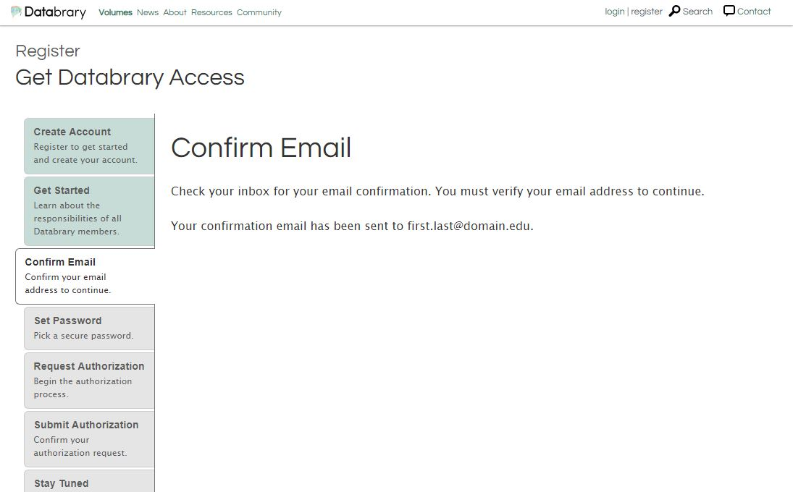
Set Password
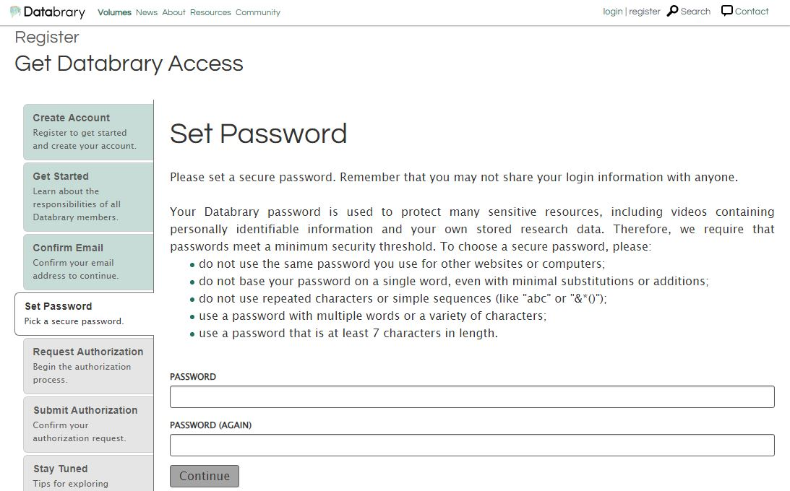
- Require strong password (increase number of required characters from 7 to 14 characters. 2
- Validate password to ensure that password is strong
Request Authorization

- Add new drop-down menu for new
user_positionfield that requires users to enter their position at their institution. The acceptable values for this field are as follows:- Faculty/Independent Researcher
- Student
- Staff
- Other
- If
user_positionis in {‘Student’, ‘Staff’, ‘Other’}- Show
research_sponsortext field- Add instruction text asking user to type the name of the person who is their research sponsor or supervisor; the entered text should use look-ahead search to match to Authorized Investigators currently active on Databrary at the user’s specified institution.
- If the search succeeds, the user can select the name of their research sponsor.
- Generate a request for authorization from the current user to the research sponsor; cc the current user.
- Provide the user feedback that this request has been sent.
- If the search fails, the user can enter the name of their research sponsor, but warning text appears: “This research sponsor cannot be found.”
- Ask the user to enter their research sponsor’s institutional email address.
- Validate that address as above.
- Confirm that the user wants Databrary to send a request to register email to the user’s research sponsor.
- If yes, send the email to the research sponsor and cc the current user.
- TO-DO: Draft this email.
- Ask the user to enter their research sponsor’s institutional email address.
- Show
- If
user_positionis “Faculty/Independent Researcher”- Show new text field
user_institutional_profileand ask user to enter the URL for their institutional profile page.- Add explanatory text: “Databrary requires that we confirm a new user is eligible for Authorized Investigator status. Please provide a URL to your personal profile page at your institution to assist us in verifying your status.”
- If user’s institution is not in Databrary’s database of authorizing institutions…
- Ask user to enter information into two new (optional) text fields:
institution_authorizing_official_full_namefor the full name of the institution’s authorizing official andinstitution_authorizing_official_emailfor that person’s email.
- Ask user to enter information into two new (optional) text fields:
- If user’s institution is in the Databrary database of authorizing institutions…
- Show text saying “
institutionhas active users on Databrary. Here is a link to other users frominstitutionon Databrary:. Our staff will work with you and your institution to expedite your authorization.”
- Show text saying “
- Show new text field
Volume interface
- (new): Create bibliographic contributor field. Allow sorting of authors.
- (new): New volumes have a single owner who must be an Authorized Investigator.
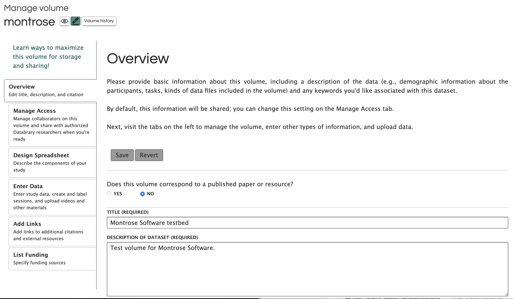
- (remove): “Does this valume correspond to a published paper…” and related look up published paper or resource; complete reference info. Will enter linked resources in Add Links tab below.
- (remove): “Add keywords” interface (push to >2.0)
- (future): Pull keywords from related/linked articles
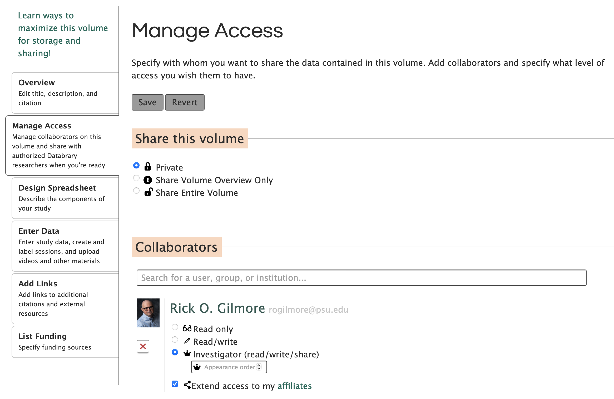
- (change): Default Volume access to Private
- (change): Separate (single) volume owner from Collaborators. Allow transfer of ownership here.
- (remove): “Extend access to … affiliates” checkbox and related functionality.
- (remove): “Investigator (read/write/share)” option for collaborators.
- (change): Make “Read only” default access level for all added Collaborators.
- (discuss): Add expiration date for access to volume for all collaborators.
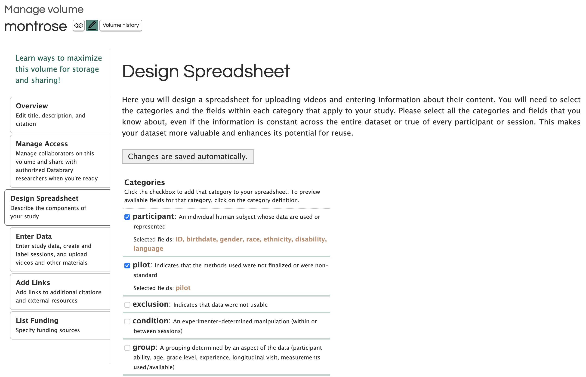
- (discuss): How to simplify
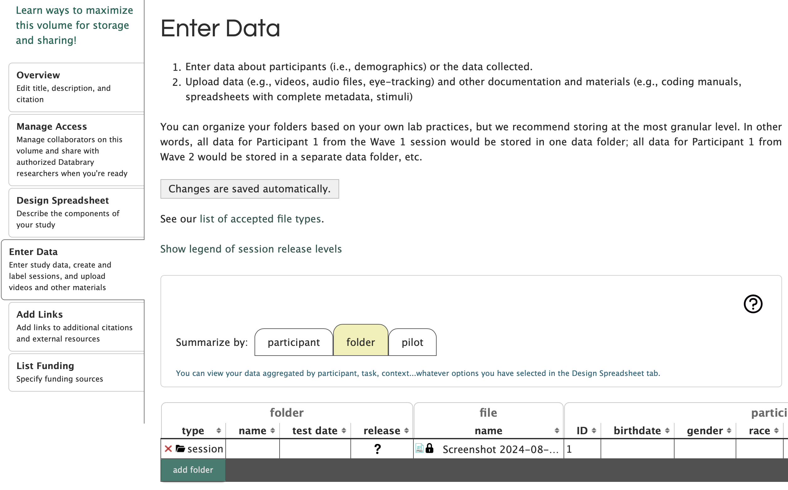
- (discuss): How to simplify
- 2024-08-06: Required variables:
- File name
- Sharing release level
- File type (from extension)
- 2024-08-06: Required variables:
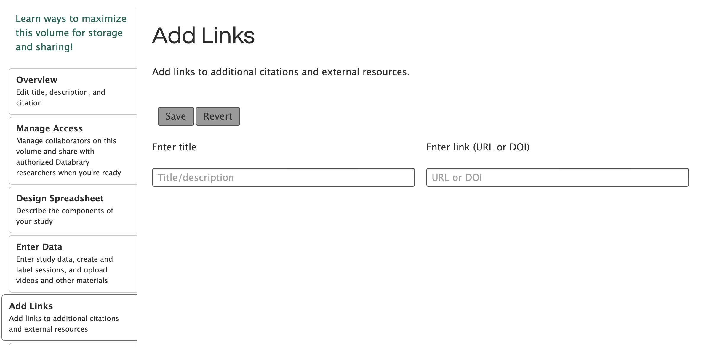
- (change): “Enter title or paper/dataset citation”
- (future): Way to search Databrary for related datasets.
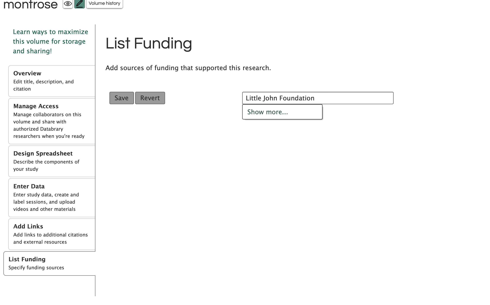
- (change): Lookup existing funder, but permit user-entered value(s)
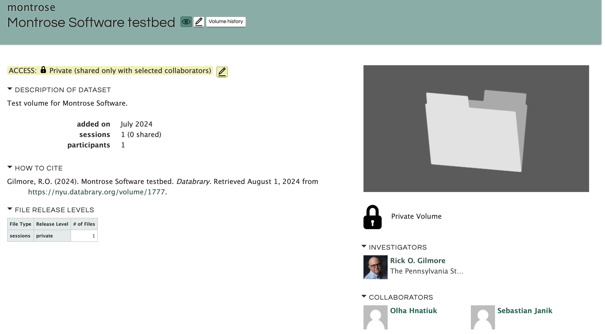
- (change): Merge FILE RELEASE LEVELS data with “added on”, “sessions”, “participants” panel
- (change): “HOW TO CITE” field has user editable authors, Databrary specific info is added by the system
- (new): OWNER sub-panel
- (change): Fix column size so that long names and affiliations aren’t cut-off
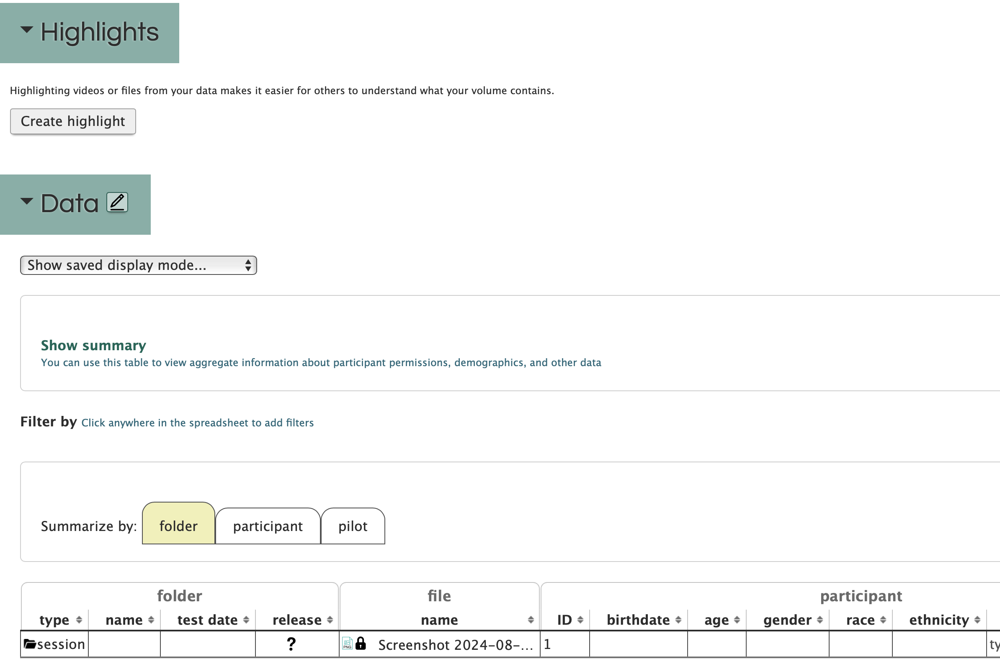
- (remove): “Create highlight” button and associated workflow. Re-implement in >2.0
- (remove): “Show saved display mode” dropdown and associated workflow. May re-implement some portion in >2.0.
- (remove): “Show summary” functionality. May re-implement some portion in >2.0.
- (remove): Save current display mode functionality.
- (new): Separate interface for Materials
- (discuss): Simpler tablular interface for spreadsheet display?
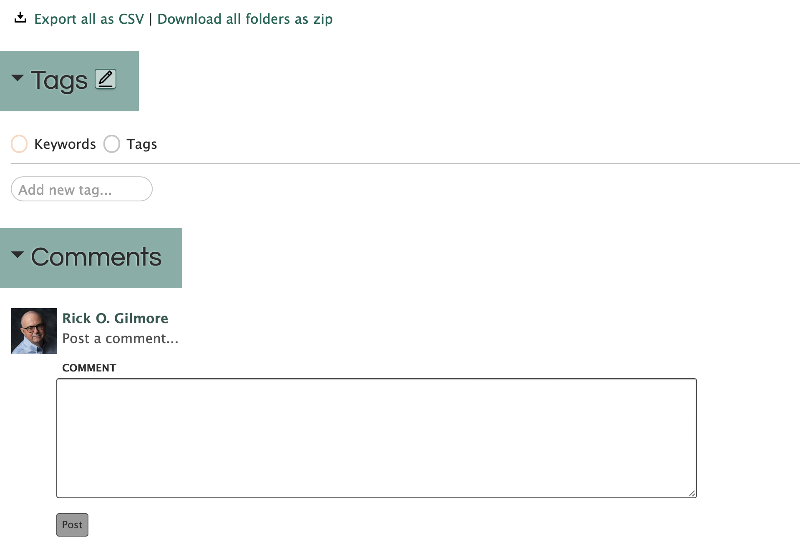
- (remove): Comments. Consider re-implementing in >2.0
Sessions interface
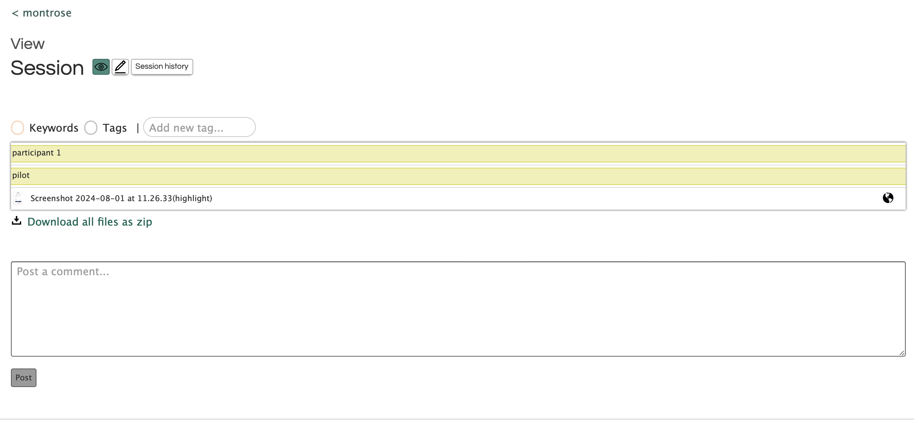
- (remove): Keywords and Tags.
- (remove): Bars that summarize spreadsheet metadata values.
- (remove): File names sort by timestamp uploaded.
- (remove): Video editing within viewer to create highlights.
- (discuss): Better interface layout for previewing videos.
- 2024-08-06
- (change): Create pop-up window for previewing video/audio
- (discuss): Could pop-up viewer allow other file-type “previews”, e.g. PDF, docx, txt? Or push to later timepoint.
- 2024-08-06
- (change): Make “set as highlight” feature more visible. This applies to a file.
- (change): Simpler tablular interface viewing files, release level, highlight status, etc.
- Columns include: File name, sharing release level, file type, size, last modified (optional)
- (discuss): Move button to downloading single file to table
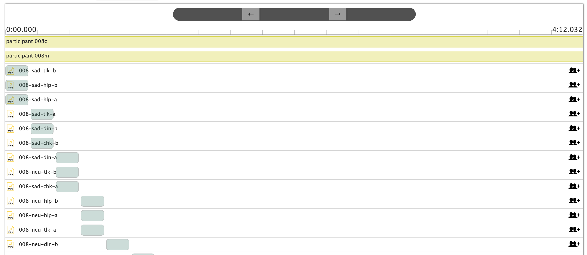 - (remove): Timeline.
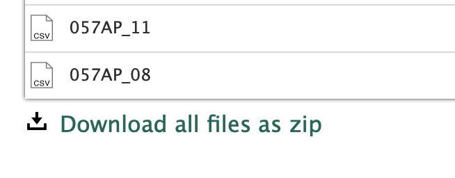
- (discuss): “Download all files as zip”. With large sessions and/or large files, the zip files are also large and require application resources to create. Are there any third party libraries we could use that would off-load this process? Note: This problem is larger with the “Download all folders as zip” function on the volumes page.
Scoping
While the core of Databrary 1.0 is understood and will be replicated in Databrary 2.0, some questions will be explored that relate to new features:
- (discuss): Should video and audio transcoding be automatic or optional; if optional, how can transcoding be triggered?
- (discuss): (What features of the existing session/slot spreadsheet interface for managing and visualizing demographic data can be implemented easily and at minimal cost using existing libraries?
Can two-factor authentication be added? If so, at what cost?3- (discuss): Can per-institution (across users and projects), per-user (across projects) or per-project storage quotas be implemented? Can warnings be generated when storage amounts are nearing quotas? How could Super Users manage user requests to increase quotas?
- (discuss): Can a more informative administrative console be developed with by-volume, usage, and storage metrics, including shared vs. unshared data? If so, at what cost?
- (discuss): Volume access expires after a user-defined date that is no longer than one year from the date of the last update.
Roadmap (>2.0)
Support for open data schemas
- Databrary should eventually support standard schemas wherever practical, specifically in the JSON-LD format. These should use Schema.org properties.
- Examples of properties that seem relevant to Databrary include:
- Person
- Creative Work
- Event
- For a data collection session or change in status on the site.
- Place
- Intangible
- The set of Data Types
These examples are not exhaustive.
Databrary should also support NIH Common Data Elements (CDEs), especially for “spreadsheet” data elements.
- Examples of CDE properties of a Person
- Gender: https://cde.nlm.nih.gov/formView?tinyId=vx35JcbgJI
- Sex at Birth: https://cde.nlm.nih.gov/deView?tinyId=rGEh0ckdmr
- Race: https://cde.nlm.nih.gov/deView?tinyId=Fakc6Jy2x
- Race/Ethnicity Self-Identification: https://cde.nlm.nih.gov/deView?tinyId=LakF0YkywC
- Ethnicity: https://cde.nlm.nih.gov/deView?tinyId=PtRlg7yLP_
- Disabilities: https://cde.nlm.nih.gov/deView?tinyId=0md12WGtZXE
- Birth date: https://cde.nlm.nih.gov/deView?tinyId=X1mJv5j3jx.
There are a set of CDEs that NIH endorses. These should be the highest priority.
Improved search and filtering
Ideas from HNDS-I 2024 proposal:
- Broader set of demographic characteristics.
- Index other text documents in materials folders.
Index annotation files, return segments
“Building on this foundation, we will upgrade Databrary to support searching within annotation files linked to videos that tag specific behaviors, utterances, or contexts, starting with the most popular annotation file formats stored on Databrary (Datavyu and CHAT)”
— HNDS-I proposal.
“Virtual volumes” or custom collections
To capitalize on enhanced search and filtering and ease data reuse, users must be able to create their own custom collections of video files, video segments, annotations, and other data derived from multiple, primary datasets. The custom collections or “virtual datasets” will link to but not copy parent datasets and their associated metadata.
— HNDS-I proposal.
Workspaces
…We will implement private, flexible, temporary workspaces for datasets that act like folders in cloud storage. Unlike other forms of cloud storage that provide only a temporary home for research data, Databrary’s workspaces will provide a permanent and flexible home that is just a button press away from being made accessible to the broader research community.
– HNDS-I proposal.
Expanding scriptable access
…We will build on the free, open-source, R package, databraryr, that PI Gilmore developed with NSF support and openly released to the research community. Databraryr wraps Databrary API calls into commands that are useful to researchers who want to download shared data from Databrary. We will add data uploading capabilities to the R package to support Aim 3, develop and publish a parallel Python package, databrarypy.
– HNDS-I proposal.
Administrative upgrades
- Quotas on per-user, per-institution storage footprints.
- Infrastructure for managing subscriptions, curation assistance, data deposit fees.
- Links to institutional admin panel functions; data footprint, etc.
Version control
Private volumes for peer review
OSF implements this.